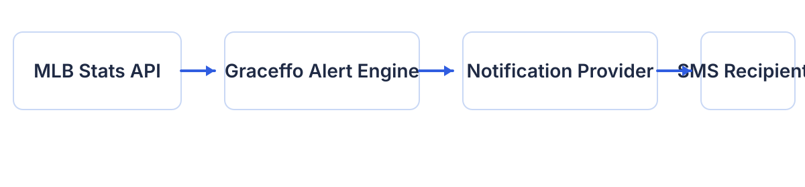

Real-Time Monitoring
Continuously monitors official MLB game feeds.
Personal Engineering Project
Real-time SMS notifications when Gordon Graceffo enters a St. Louis Cardinals game.
Graceffo Alert is a lightweight notification service that monitors official MLB game data and automatically notifies a small group of family members and friends whenever Gordon Graceffo enters a game.
Continuously monitors official MLB game feeds.
Sends SMS only when Gordon Graceffo actually enters a game.
Phone numbers are never sold or shared. Recipients are individually approved.
A streamlined pipeline designed for reliable, low-maintenance notification delivery.

Graceffo Alert is a personal engineering project demonstrating modern software architecture patterns, including state machines, retry orchestration, Redis persistence, provider abstraction, runtime observability, and production telemetry.
The application is not a commercial service. It exists solely to deliver personal notifications to approved family members and friends who requested updates.